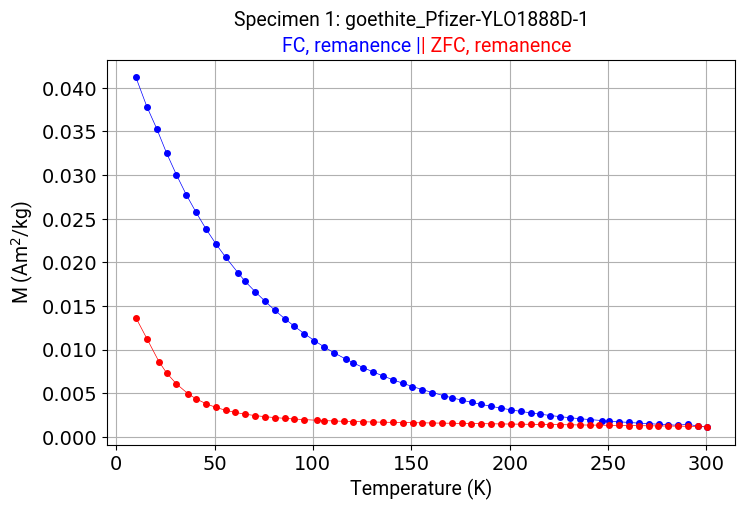
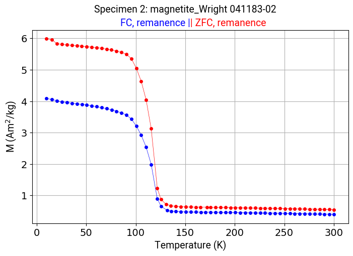

import os
import pandas as pd
import numpy as np
import matplotlib.pyplot as plt
from scipy.interpolate import interp1d
from ipywidgets import interact, widgets, FloatSlider, Play, VBox
from IPython.display import display, Javascript, HTML
#-----------------------------------------------------------
# Define a JavaScript function to scroll to the top of the next cell
scroll_to_next_cell = """
<script>
function scrollToNextCell() {
var currentCell = Jupyter.notebook.get_selected_cell();
var currentCellIndex = Jupyter.notebook.find_cell_index(currentCell);
var nextCell = Jupyter.notebook.get_cell(currentCellIndex + 1);
if (nextCell) {
nextCell.element[0].scrollIntoView({behavior: 'smooth', block: 'start'});
}
}
</script>
"""
# Execute the JavaScript function after running the cell
Javascript(scroll_to_next_cell)
#-----------------------------------------------------------
# Set the current directory to the notebook directory
dir = os.path.dirname(os.path.abspath("__file__"))
# Read in excel file as a data frame
mpmsdc_dfs = pd.read_excel(os.path.join(dir, "rock_magnetic_bestiary_mpms.xlsx"), sheet_name=None, header=None)
mpmsdc = pd.concat(mpmsdc_dfs, ignore_index=True)
mpmsdc = mpmsdc.astype(str)
for column in mpmsdc.columns:
mpmsdc[column] = mpmsdc[column].str.replace("RT remanence on cooling", "RT remanence cooling")
#-------------------------------------------------------------------------------------------------------
# Define global variables
selected_measurement = None
selected_measurement_name1 = None
selected_measurement_name2 = None
selected_specimen1 = None
selected_specimen2 = None
sp1_data = None
sp1_data1 = None
sp1_data2 = None
sp2_data = None
sp2_data1 = None
sp2_data2 = None
x1 = None
y1 = None
x2 = None
y2 = None
x1_1 = None
y1_1 = None
x1_2 = None
y1_2 = None
x2_1 = None
y2_1 = None
x2_2 = None
y2_2 = None
doubles = ["FC, remanence","ZFC, remanence","RT remanence on cooling","RT remanence cooling", "RT remanence warming"]
#-------------------------------------------------------------------------------------------------------
# Make a list of specimen names
names = mpmsdc.loc[0].dropna().unique()
# Store default specimen and measurement
initial_measurements = mpmsdc.loc[1][mpmsdc.loc[0] == names[0]].dropna().unique()
default_measurement = initial_measurements[0]
# Define a function to run the next cell when the dropdowns are changed
def run_next_cell(change):
display(Javascript('''
try {
Jupyter.notebook.execute_cells([Jupyter.notebook.get_selected_index() + 1]);
} catch(err) {
console.error('Error executing next cell:', err);
}
'''))
#-------------------------------------------------------------------------------------------------------
# Define a function to update the selected specimen and set it as a variable
def update_specimen1(change):
global selected_specimen1
global initial_measurements
sp1_data = None
sp1_data1 = None
sp1_data2 = None
sp2_data = None
sp2_data1 = None
sp2_data2 = None
selected_specimen1 = change.new
# Update the options of the measurements dropdown based on the selected specimen
initial_measurements = mpmsdc.loc[1][mpmsdc.loc[0] == selected_specimen1].dropna().unique()
measurements.options = initial_measurements
# Extract data associated with the first specimen name and the selected measurement type
if selected_measurement in ["FC, remanence", "ZFC, remanence"]:
selected_measurement_name1 = "FC, remanence"
selected_measurement_name2 = "ZFC, remanence"
sp1_data1 = mpmsdc.loc[:, (mpmsdc.iloc[0] == selected_specimen1) & (mpmsdc.iloc[1] == selected_measurement_name1)].iloc[5:, [0, 2]]
sp1_data2 = mpmsdc.loc[:, (mpmsdc.iloc[0] == selected_specimen1) & (mpmsdc.iloc[1] == selected_measurement_name2)].iloc[5:, [0, 2]]
elif selected_measurement in ["RT remanence cooling", "RT remanence warming"]:
selected_measurement_name1 = "RT remanence cooling"
selected_measurement_name2 = "RT remanence warming"
sp1_data1 = mpmsdc.loc[:, (mpmsdc.iloc[0] == selected_specimen1) & (mpmsdc.iloc[1] == selected_measurement_name1)].iloc[5:, [0, 2]]
sp1_data2 = mpmsdc.loc[:, (mpmsdc.iloc[0] == selected_specimen1) & (mpmsdc.iloc[1] == selected_measurement_name2)].iloc[5:, [0, 2]]
else:
sp1_data = mpmsdc.loc[:, (mpmsdc.iloc[0] == selected_specimen1) & (mpmsdc.iloc[1] == selected_measurement)].iloc[5:, [0, 2]]
# Convert data to numeric (assuming columns 1 and 3 are numeric)
if selected_measurement not in doubles:
sp1_data = sp1_data.apply(pd.to_numeric, errors='coerce')
# Convert data1 and data2 to numeric (assuming columns 1 and 3 are numeric)
if selected_measurement in doubles:
sp1_data1 = sp1_data1.apply(pd.to_numeric, errors='coerce')
sp1_data2 = sp1_data2.apply(pd.to_numeric, errors='coerce')
# Remove rows with NaN values in either column 1 or column 3
if selected_measurement in doubles:
sp1_data1 = sp1_data1.dropna()
sp1_data2 = sp1_data2.dropna()
else:
sp1_data = sp1_data.dropna()
#-------------------------------------------------------------------------------------------------------
# Define a function to update the selected measurement and set it as a variable
def update_measurement(change):
global selected_measurement
global selected_measurement_name1
global selected_measurement_name2
global selected_specimen1
global selected_specimen2
global sp1_data
global sp1_data1
global sp1_data2
global doubles
# Initialize variables
sp1_data = None
sp1_data1 = None
sp1_data2 = None
# Update selected measurement
selected_measurement = change.new
# Extract data associated with the first specimen name and the selected measurement type
if selected_measurement in ["FC, remanence", "ZFC, remanence"]:
selected_measurement_name1 = "FC, remanence"
selected_measurement_name2 = "ZFC, remanence"
sp1_data1 = mpmsdc.loc[:, (mpmsdc.iloc[0] == selected_specimen1) & (mpmsdc.iloc[1] == selected_measurement_name1)].iloc[5:, [0, 2]]
sp1_data2 = mpmsdc.loc[:, (mpmsdc.iloc[0] == selected_specimen1) & (mpmsdc.iloc[1] == selected_measurement_name2)].iloc[5:, [0, 2]]
elif selected_measurement in ["RT remanence cooling", "RT remanence warming"]:
selected_measurement_name1 = "RT remanence cooling"
selected_measurement_name2 = "RT remanence warming"
sp1_data1 = mpmsdc.loc[:, (mpmsdc.iloc[0] == selected_specimen1) & (mpmsdc.iloc[1] == selected_measurement_name1)].iloc[5:, [0, 2]]
sp1_data2 = mpmsdc.loc[:, (mpmsdc.iloc[0] == selected_specimen1) & (mpmsdc.iloc[1] == selected_measurement_name2)].iloc[5:, [0, 2]]
else:
sp1_data = mpmsdc.loc[:, (mpmsdc.iloc[0] == selected_specimen1) & (mpmsdc.iloc[1] == selected_measurement)].iloc[5:, [0, 2]]
# Convert data to numeric (assuming columns 1 and 3 are numeric)
if selected_measurement not in doubles:
sp1_data = sp1_data.apply(pd.to_numeric, errors='coerce')
# Convert data1 and data2 to numeric (assuming columns 1 and 3 are numeric)
if selected_measurement in doubles:
sp1_data1 = sp1_data1.apply(pd.to_numeric, errors='coerce')
sp1_data2 = sp1_data2.apply(pd.to_numeric, errors='coerce')
# Remove rows with NaN values in either column 1 or column 3
if selected_measurement in doubles:
sp1_data1 = sp1_data1.dropna()
sp1_data2 = sp1_data2.dropna()
else:
sp1_data = sp1_data.dropna()
# Update options for Specimen 2 dropdown based on the selected measurement type
initial_specimens = mpmsdc.loc[0][mpmsdc.loc[1] == selected_measurement].dropna().unique()
specimen2_dropdown.options = initial_specimens
#-------------------------------------------------------------------------------------------------------
# Define a function to update selected specimen2 and set it as a variable
def update_specimen2(change):
global selected_measurement
global selected_measurement_name1
global selected_measurement_name2
global selected_specimen1
global selected_specimen2
global sp2_data
global sp2_data1
global sp2_data2
global doubles
# Initialize variables
sp2_data = None
sp2_data1 = None
sp2_data2 = None
selected_specimen2 = change.new
# Extract data associated with the 2nd specimen name and the selected measurement type
if selected_measurement in ["FC, remanence", "ZFC, remanence"]:
selected_measurement_name1 = "FC, remanence"
selected_measurement_name2 = "ZFC, remanence"
sp2_data1 = mpmsdc.loc[:, (mpmsdc.iloc[0] == selected_specimen2) & (mpmsdc.iloc[1] == selected_measurement_name1)].iloc[5:, [0, 2]]
sp2_data2 = mpmsdc.loc[:, (mpmsdc.iloc[0] == selected_specimen2) & (mpmsdc.iloc[1] == selected_measurement_name2)].iloc[5:, [0, 2]]
elif selected_measurement in ["RT remanence cooling", "RT remanence warming"]:
selected_measurement_name1 = "RT remanence cooling"
selected_measurement_name2 = "RT remanence warming"
sp2_data1 = mpmsdc.loc[:, (mpmsdc.iloc[0] == selected_specimen2) & (mpmsdc.iloc[1] == selected_measurement_name1)].iloc[5:, [0, 2]]
sp2_data2 = mpmsdc.loc[:, (mpmsdc.iloc[0] == selected_specimen2) & (mpmsdc.iloc[1] == selected_measurement_name2)].iloc[5:, [0, 2]]
else:
sp2_data = mpmsdc.loc[:, (mpmsdc.iloc[0] == selected_specimen2) & (mpmsdc.iloc[1] == selected_measurement)].iloc[5:, [0, 2]]
# Convert data to numeric (assuming columns 1 and 3 are numeric)
if selected_measurement not in doubles:
sp2_data = sp2_data.apply(pd.to_numeric, errors='coerce')
# Convert data1 and data2 to numeric (assuming columns 1 and 3 are numeric)
if selected_measurement in doubles:
sp2_data1 = sp2_data1.apply(pd.to_numeric, errors='coerce')
sp2_data2 = sp2_data2.apply(pd.to_numeric, errors='coerce')
# Remove rows with NaN values in either column 1 or column 3
if selected_measurement in doubles:
sp2_data1 = sp2_data1.dropna()
sp2_data2 = sp2_data2.dropna()
else:
sp2_data = sp2_data.dropna()
#-------------------------------------------------------------------------------------------------------
# Create a dropdown menu for selecting specimen
specimen1_dropdown = widgets.Dropdown(options=names, description="Select Specimen 1", style={'description_width': 'initial'})
# Display the specimen1 dropdown
#display(specimen1_dropdown)
# Add an observer to capture the selected value and call the update_specimen function
specimen1_dropdown.observe(update_specimen1, names='value')
#specimen1_dropdown.observe(update_measurement, names='value')
specimen1_dropdown.observe(run_next_cell, names='value')
# Initialize measurement dropdown with options based on the first specimen
measurements = widgets.Dropdown(options=initial_measurements, value=default_measurement, description="Select Measurement", style={'description_width': 'initial'})
#display(measurements)
# Add an observer to capture the selected value and call the update_measurement function
measurements.observe(update_measurement, names='value')
measurements.observe(run_next_cell, names='value')
# Initialize specimen2 dropdown with options based on the default measurement
initial_specimens = mpmsdc.loc[0][mpmsdc.loc[1] == default_measurement].dropna().unique()
specimen2_dropdown = widgets.Dropdown(options=initial_specimens, description="Select Specimen 2", style={'description_width': 'initial'})
# Display the specimen2 dropdown
#display(specimen2_dropdown)
# Add an observer to capture the selected value and call the update_specimen2 function
specimen2_dropdown.observe(update_specimen2, names='value')
specimen2_dropdown.observe(run_next_cell, names='value')
gui_box = widgets.VBox([specimen1_dropdown, measurements, specimen2_dropdown])
display(gui_box)
# Define plot styling
ctype = {
"FC, induced": ('LightSkyBlue', 'FC, induced'),
"ZFC, induced moment": ('LightCoral', 'ZFC, induced moment'),
"FC, remanence": ('Blue', 'FC, remanence'),
"ZFC, remanence": ('Red', 'ZFC, remanence'),
"RT remanence cooling": ('Black', 'RT remanence cooling'),
"RT remanence warming": ('Green', 'RT remanence warming'),
"Js v. T": ('Orange', 'Js v. T')
}
# Define a function to get color from ctype
def get_color(measurement_type):
return ctype.get(measurement_type, ('black', 'Unknown'))[0] # Default to black if not found
# Assuming selected_measurement is a single measurement type
# Plot data with the selected color
marker_size = 4
line_thickness = 0.5
font_size = 14
label_font_size = 14
label_font_family = 'Roboto'
label_font_color = 'black'
#--------------------------------------------------------------------------------------------------------
#Specimen 1 Plot
#--------------------------------------------------------------------------------------------------------
# Plot data if it exists
if sp1_data is not None:
color = get_color(selected_measurement)
plt.plot(sp1_data.iloc[:, 0], sp1_data.iloc[:, 1], marker='o', markersize=marker_size, linestyle='-', color=color, linewidth=line_thickness)
# Plot data1 and data2 if they exist
if sp1_data1 is not None:
color1 = get_color(selected_measurement_name1)
plt.plot(sp1_data1.iloc[:, 0], sp1_data1.iloc[:, 1], marker='o', markersize=marker_size, linestyle='-', color=color1, linewidth=line_thickness)
if sp1_data2 is not None:
color2 = get_color(selected_measurement_name2)
plt.plot(sp1_data2.iloc[:, 0], sp1_data2.iloc[:, 1], marker='o', markersize=marker_size, linestyle='-', color=color2, linewidth=line_thickness)
# Set plot range
if sp1_data is not None:
plt.xlim(0, 310)
plt.ylim(min(sp1_data.iloc[:, 1].values)-0.02*(max(sp1_data.iloc[:, 1].values)-min(sp1_data.iloc[:, 1].values)), (max(sp1_data.iloc[:, 1].values))*1.02)
# Set axes styling
plt.xlabel('Temperature (K)', fontsize=label_font_size, fontfamily=label_font_family, color=label_font_color)
plt.ylabel('M (Am$^{2}$/kg)', fontsize=label_font_size, fontfamily=label_font_family, color=label_font_color)
plt.xticks(fontsize=font_size)
plt.yticks(fontsize=font_size)
plt.grid(True)
# Set frame and plot label
if sp1_data is not None:
plt.suptitle('Specimen 1: ' + selected_specimen1, fontsize=label_font_size, fontfamily=label_font_family, color=label_font_color)
plt.title(selected_measurement, fontsize=label_font_size, fontfamily=label_font_family, color=color)
# Plot data1 and data2 if they exist
if sp1_data1 is not None:
# Construct the title strings
plot = plt.suptitle('Specimen 1: ' + selected_specimen1, horizontalalignment='center', fontsize=label_font_size, fontfamily=label_font_family, color=label_font_color)
text = plt.title(selected_measurement_name1 +" |", horizontalalignment='right', color=color1, fontsize=label_font_size, fontfamily=label_font_family)
text = plt.annotate("| " +selected_measurement_name2, xycoords=text, xy=(1, 0), color=color2, verticalalignment="bottom", fontsize=label_font_size, fontfamily=label_font_family)
plt.gcf().set_size_inches(8.1, 5)
plt.show()
#--------------------------------------------------------------------------------------------------------
#Specimen 2 Plot
#--------------------------------------------------------------------------------------------------------
# Plot data if it exists
if sp2_data is not None:
color = get_color(selected_measurement)
plt.plot(sp2_data.iloc[:, 0], sp2_data.iloc[:, 1], marker='o', markersize=marker_size, linestyle='-', color=color, linewidth=line_thickness)
# Plot data1 and data2 if they exist
if sp2_data1 is not None:
color1 = get_color(selected_measurement_name1)
plt.plot(sp2_data1.iloc[:, 0], sp2_data1.iloc[:, 1], marker='o', markersize=marker_size, linestyle='-', color=color1, linewidth=line_thickness)
if sp2_data2 is not None:
color2 = get_color(selected_measurement_name2)
plt.plot(sp2_data2.iloc[:, 0], sp2_data2.iloc[:, 1], marker='o', markersize=marker_size, linestyle='-', color=color2, linewidth=line_thickness)
# Set plot range
if sp2_data is not None:
plt.xlim(0, 310)
plt.ylim(min(sp2_data.iloc[:, 1].values)-0.02*(max(sp2_data.iloc[:, 1].values)-min(sp2_data.iloc[:, 1].values)), (max(sp2_data.iloc[:, 1].values))*1.02)
# Set axes styling
plt.xlabel('Temperature (K)', fontsize=label_font_size, fontfamily=label_font_family, color=label_font_color)
plt.ylabel('M (Am$^{2}$/kg)', fontsize=label_font_size, fontfamily=label_font_family, color=label_font_color)
plt.xticks(fontsize=font_size)
plt.yticks(fontsize=font_size)
plt.grid(True)
# Set frame and plot label
if sp2_data is not None:
plt.suptitle('Specimen 2: ' + selected_specimen2, fontsize=label_font_size, fontfamily=label_font_family, color=label_font_color)
plt.title(selected_measurement, fontsize=label_font_size, fontfamily=label_font_family, color=color)
# Plot data1 and data2 if they exist
if sp2_data1 is not None:
plot = plt.suptitle('Specimen 2: ' + selected_specimen2, horizontalalignment='center', fontsize=label_font_size, fontfamily=label_font_family, color=label_font_color)
text = plt.title(selected_measurement_name1 +" |", horizontalalignment='right', color=color1, fontsize=label_font_size, fontfamily=label_font_family)
text = plt.annotate("| " + selected_measurement_name2, xycoords=text, xy=(1, 0), color=color2, verticalalignment="bottom", fontsize=label_font_size, fontfamily=label_font_family)
plt.gcf().set_size_inches(8.1, 5)
plt.show()
#Interpolation of the data series in 0.1 K intervals from 2-300 K
plt.clf() # Clear previous plot
if 'sp1_data' in locals() and sp1_data is not None:
x1_1 = None
y1_1 = None
f1_1 = None
new_x1_1 = None
new_y1_1 = None
x1_2 = None
y1_2 = None
f1_2 = None
new_x1_2 = None
new_y1_2 = None
x2_1 = None
y2_1 = None
f2_1 = None
new_x2_1 = None
new_y2_1 = None
x2_2 = None
y2_2 = None
f2_2 = None
new_x2_2 = None
new_y2_2 = None
x1 = sp1_data.iloc[:, 0].values # Extracting x values
y1 = sp1_data.iloc[:, 1].values # Extracting y values
f1 = interp1d(x1, y1, kind='linear', fill_value='extrapolate')
new_x1 = np.arange(2, 300, 5)
new_y1 = f1(new_x1)
x2 = sp2_data.iloc[:, 0].values # Extracting x values
y2 = sp2_data.iloc[:, 1].values # Extracting y values
f2 = interp1d(x2, y2, kind='linear', fill_value='extrapolate')
new_x2 = np.arange(2, 300, 5)
new_y2 = f2(new_x2)
if 'sp1_data1' in locals() and sp1_data1 is not None:
x1 = None
y1 = None
f1 = None
new_x1 = None
new_y1 = None
x2 = None
y2 = None
f2 = None
new_x2 = None
new_y2 = None
x1_1 = sp1_data1.iloc[:, 0].values # Extracting x values
y1_1 = sp1_data1.iloc[:, 1].values # Extracting y values
f1_1 = interp1d(x1_1, y1_1, kind='linear', fill_value='extrapolate')
new_x1_1 = np.arange(2, 300, 5)
new_y1_1 = f1_1(new_x1_1)
x1_2 = sp1_data2.iloc[:, 0].values # Extracting x values
y1_2 = sp1_data2.iloc[:, 1].values # Extracting y values
f1_2 = interp1d(x1_2, y1_2, kind='linear', fill_value='extrapolate')
new_x1_2 = np.arange(2, 300, 5)
new_y1_2 = f1_2(new_x1_2)
x2_1 = sp2_data1.iloc[:, 0].values # Extracting x values
y2_1 = sp2_data1.iloc[:, 1].values # Extracting y values
f2_1 = interp1d(x2_1, y2_1, kind='linear', fill_value='extrapolate')
new_x2_1 = np.arange(2, 300, 5)
new_y2_1 = f2_1(new_x2_1)
x2_2 = sp2_data2.iloc[:, 0].values # Extracting x values
y2_2 = sp2_data2.iloc[:, 1].values # Extracting y values
f2_2 = interp1d(x2_2, y2_2, kind='linear', fill_value='extrapolate')
new_x2_2 = np.arange(2, 300, 5)
new_y2_2 = f2_2(new_x2_2)
ratio = np.arange(0, 1, 0.001)
# Function to update and plot the data
def update_plot(ratio):
global new_x1
global new_y1
plt.clf() # Clear previous plot
ratio100 = np.around(ratio*100,decimals=1)
if x1 is not None:
mag1 = np.sum(new_y1)*(100-ratio)
mag2 = np.sum(new_y2)*ratio
per_mag1 = (mag1/(mag1 + mag2))*100
per_mag2 = (mag2/(mag1 + mag2))*100
per_mag1_text = str(per_mag1)
plt.clf() # Clear previous plot
plt.plot(new_x1, ((1-ratio) * new_y1) + (ratio * new_y2), marker='o', markersize=marker_size, linestyle='-', color=color, linewidth=line_thickness)
plt.xlabel('Temperature (K)', fontsize=label_font_size, fontfamily=label_font_family, color=label_font_color)
plt.ylabel('M (Am$^{2}$/kg)', fontsize=label_font_size, fontfamily=label_font_family, color=label_font_color)
plt.xticks(fontsize=font_size)
plt.yticks(fontsize=font_size)
plt.grid(True)
plot = plt.suptitle(str(100-ratio100) + '% Specimen 1: ' + selected_specimen1 + ' \n' + str(ratio100) + '% Specimen 2: ' + selected_specimen2, horizontalalignment='center', verticalalignment='center', fontsize=label_font_size, fontfamily=label_font_family, color=label_font_color)
text = plt.title(selected_measurement, horizontalalignment='right', color=color, fontsize=label_font_size, fontfamily=label_font_family)
plt.gcf().set_size_inches(8.1, 5)
plt.show()
if x1_1 is not None:
mag1_1 = np.sum(new_y1_1)*(100-ratio)
mag1_2 = np.sum(new_y1_2)*(100-ratio)
mag2_1 = np.sum(new_y2_1)*ratio
mag2_2 = np.sum(new_y2_2)*ratio
per_mag11 = (mag1_1/(mag1_1 + mag2_1))*100
per_mag21 = (mag2_1/(mag1_1 + mag2_1))*100
per_mag11_text = str(per_mag11)
plt.clf() # Clear previous plot
plt.plot(new_x1_1, ((1-ratio) * new_y1_1) + (ratio * new_y2_1), marker='o', markersize=marker_size, linestyle='-', color=color1, linewidth=line_thickness)
plt.plot(new_x1_2, ((1-ratio) * new_y1_2) + (ratio * new_y2_2), marker='o', markersize=marker_size, linestyle='-', color=color2, linewidth=line_thickness)
plt.xlabel('Temperature (K)', fontsize=label_font_size, fontfamily=label_font_family, color=label_font_color)
plt.ylabel('M (Am$^{2}$/kg)', fontsize=label_font_size, fontfamily=label_font_family, color=label_font_color)
plt.xticks(fontsize=font_size)
plt.yticks(fontsize=font_size)
plt.grid(True)
plot = plt.suptitle(str(100-ratio100) + '% Specimen 1: ' + selected_specimen1 + ' \n' + str(ratio100) + '% Specimen 2: ' + selected_specimen2, horizontalalignment='center', verticalalignment='center', fontsize=label_font_size, fontfamily=label_font_family, color=label_font_color)
text = plt.title(selected_measurement_name1 +" |", horizontalalignment='right', color=color1, fontsize=label_font_size, fontfamily=label_font_family)
text = plt.annotate("| " + selected_measurement_name2, xycoords=text, xy=(1, 0), color=color2, verticalalignment="bottom", fontsize=label_font_size, fontfamily=label_font_family)
plt.gcf().set_size_inches(8.1, 5)
plt.show()
# Create the interactive slider
interact(update_plot, ratio=(0, 1, 0.001))


<Figure size 640x480 with 0 Axes>
<function __main__.update_plot(ratio)>